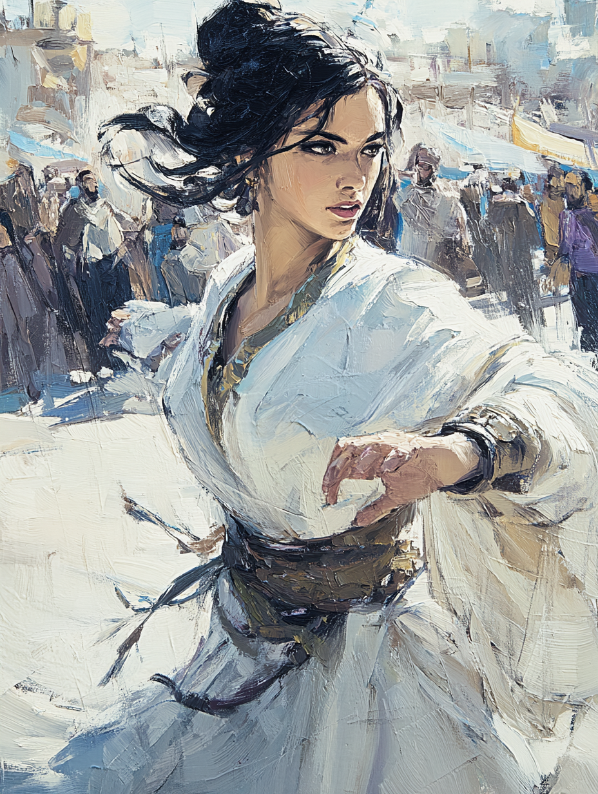

Zehra of the Spinning Veil
Dervish of the Galata Lodge · Whirling Dervish

Circassian · Aged Twenty-Nine
On the Subject
Zehra performs the sema — the Mevlevi whirling ritual — in public squares and at the tekke (lodge) where she lives and trains. To the crowds who watch, the spinning is a meditation, a prayer cast in motion. To Zehra, it is both that and more: she has learned, through the dance, to move with such precision and presence that blades pass through her veil rather than her body.
She came down to Constantinople from a Circassian village six years ago and has not been home since. The Mevlevi lodge is her family now. Her sheikh believes she is ready to walk in the world; she is not yet certain he is right.
Faculties & Saving Throws
Base array 17, 12, 12, 12, 11, 10; Human +1 to each
Bearing in the Field
Skills
| Skill | Bonus | Source |
|---|---|---|
| Acrobatics | +6 | Monk |
| Athletics | +2 | Monk |
| Insight | +3 | Acolyte |
| Performance | +3 | Whirling Dervish |
| Religion | +3 | Acolyte |
| Stealth | +6 | Human |
Class Features
AC = 10 + Dex + Wis (already factored into AC 15).
- Uses Dex (+4) instead of Str for monk weapons and unarmed strikes.
- Unarmed strike or monk weapon: damage die is 1d4 (becomes 1d6 at Level 5).
- When taking the Attack action with an unarmed strike or monk weapon, may make ONE unarmed strike as a bonus action.
Spend Ki to fuel the following:
+10 ft. speed when not wearing armor or shield. Stacks with the Mobile feat for a total speed of 50 ft.
Reduce ranged weapon damage by 1d10 + 4 (Dex) + 3 (level) = 1d10+7. If reduced to 0 and she has 1 Ki and a free hand, spend 1 Ki to catch and throw it back (ranged attack, 20/60 range).
Choose one of the following:
Performance skill, and proficiency with the tanbur (long-necked lute, central to Mevlevi musical tradition).
Feat
- +10 ft. speed (already factored — Speed 50).
- When she takes the Dash action, difficult terrain doesn't cost her extra movement that turn.
- When she makes a melee attack against a creature, that creature cannot make opportunity attacks against her for the rest of the turn (whether she hits or not).
Mobile + Whirling Dance + Unarmored Movement makes Zehra functionally impossible to pin down. She can engage, attack, and disengage in a single turn, often moving 50+ feet between attacks, free of opportunity attacks.
Background — Acolyte (Mevlevi Initiate)
Any Mevlevi tekke (lodge) in the Ottoman world will house and feed Zehra and her companions for free. Mevlevi lodges exist from Konya (the order's spiritual home) through Cairo, Damascus, Aleppo, Sarajevo, and across Anatolia.
Her fellow dervishes will provide aid consistent with their religious obligations — counsel, lodging, an introduction to local notables — but will not bear arms on her behalf.
Equipment
- Quarterstaff — 1d6 bludgeoning, versatile 1d8; monk weapon — uses Dex; +6 to hit / 1d6+4 one-handed, 1d8+4 two-handed; also her walking staff
- Dart × 10 — 1d4 piercing, finesse, thrown 20/60; monk weapon — uses Dex; +6 to hit / 1d4+4
- Unarmed Strike — 1d4 bludgeoning; +6 to hit / 1d4+4; palm strikes, sweeping kicks, elbow blows in the spinning style
- None — Monks gain no benefit from armour; her Unarmored Defense + Mobile is her defense
Worn during ritual; otherwise carried folded.
- Performance veil — a length of fine cloth she wraps in different configurations: shoulder wrap, head covering, modesty veil; central to her stage presence and her sobriquet
- Tanbur in a soft case — sized for travel; long-necked lute
- Prayer beads (tasbih) — 99 wooden beads
- Holy symbol of the Mevlevi Order — a small enameled disc bearing the tarikat insignia
- Common clothes — Acolyte
- Book of devotional poetry — Rumi's Masnavi, gifted by her sheikh
- Cell at the Galata Mevlevihanesi — Mevlevi lodge in Galata, Constantinople's most prominent Mevlevi house
Personality
I do not stand still. Even when seated, even when sleeping, some part of me is moving. The world turns, and I turn with it.
The sema is not a performance but a prayer. To dance is to remember that everything in creation turns — the planets, the seasons, the blood in our hearts. I serve God by remembering this.
My sheikh believes I am ready to leave the lodge for a while and walk in the world. I am not certain he is right. I will prove him right or come home having failed and admit it.
I find the lay world distracting and noisy. I lose patience with people who cannot sit with silence. I do not always hide this as well as I should.
Connections
- Childhood friends with Leyla of the Blue Eye from their shared village origins.
- Trained with Osman Hamdi Bey's daughter in the art of meditation and spirituality.
Her martial prowess and agility are assets for navigating tight spaces and dangerous terrain.